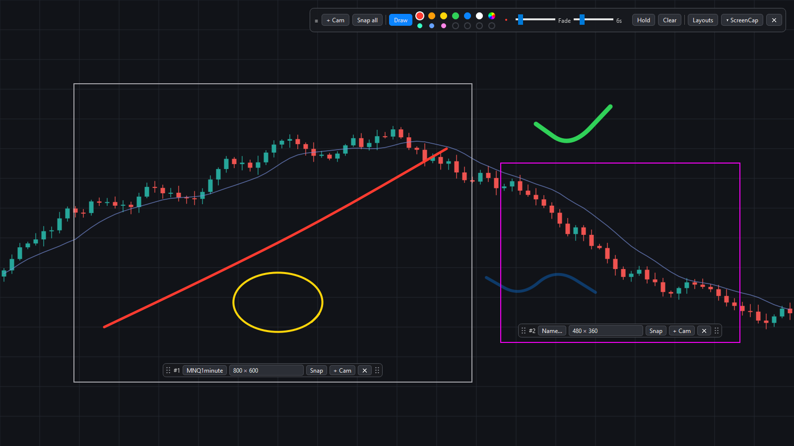
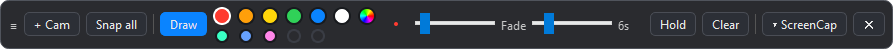
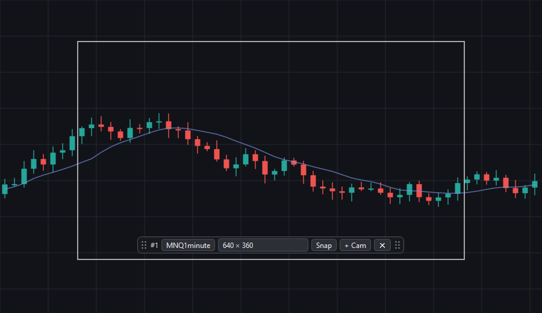
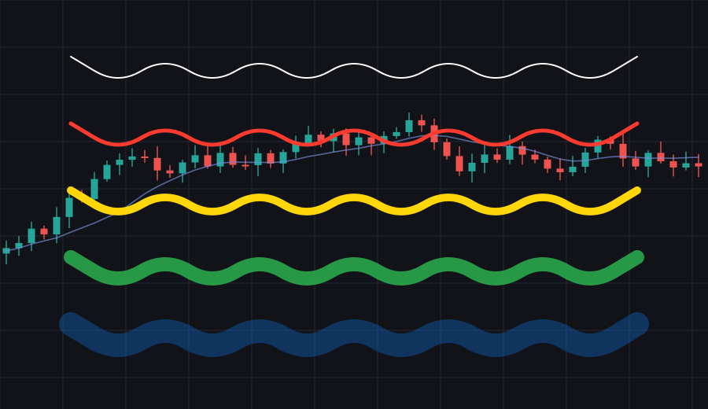
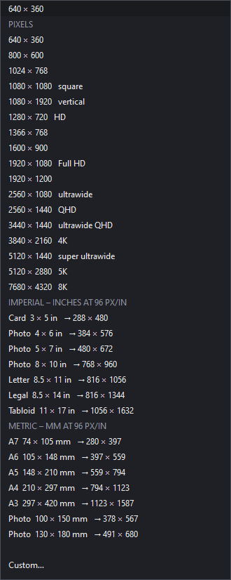

A lightweight Windows capture tool: park little camera frames on your screen, mark up what is under them, and save exact-size PNGs without ever freezing the display.

One small toolbar
Drag it anywhere. It reopens where you left it, or returns to the top-right of the main display if that monitor is gone.


Cameras
Hollow frames. Only a thin border exists, so you keep working inside the capture area.
As many as you like.+ Cam on any frame spawns another of the same size.
Resize and move. Drag the border to resize; it turns magenta when grabbed. Drag the bar to move.
Edges stick to screen and taskbar edges, and a frame cannot be pushed off the desktop.
Named cameras. Give a camera a name such as MNQ1minute and its PNGs are saved under that name.
Layouts. Save the current cameras under a name and restore them later; positions are stored per monitor.
Clean shots. The bar fades away when not hovered, and every border and bar is hidden at capture time.
Snap one camera or Snap all; PNGs go to a folder and the last shot to the clipboard.

Marker
Draw on anything across every monitor, then click through again the moment you switch it off.
Fine point to thick marker: 1 to 40 px, six colours plus a colour wheel that remembers your last seven picks.
Fade slider: strokes disappear after 1 to 30 seconds.
Hold keeps them until you press Clear.
Right-click undoes the last stroke.
Strokes are part of the capture, so annotations are saved with the shot.

Exact sizes
Pixel presets from 640 × 360 up to 8K, including square, vertical and ultrawide.
Imperial: photo sizes, Letter, Legal and Tabloid in inches.